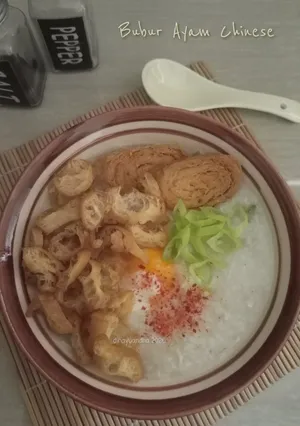

bubur ayam

olahan bubur nasi dengan tekstur yang sangat lembut dan kental, menyerupai pasta. Hidangan ini dikenal dengan aromanya yang harum serta sentuhan gurih dari minyak wijen dan kecap asin, menjadikannya pilihan makanan yang menenangkan dan cocok disantap hangat.
Bahan-bahan
- 2 piring Nasi sisa semalam
- Secukupnya air
- 100 gr dada Ayam cincang
- 1 lb 2 daun Salam
- 3 cm Jahe, cincang kasar
- 1 bt 1 bunga Pekak
- 1 sdm Kecap ikan
- 1 sdt garam
- 1 btg daun Bawang, iris kasar
- 1/2 sdt kaldu bubuk
Topping :
- Kuning Telur
- Secukupnya Cakwe, iris tipis
- Kecap asin
- Kecap asin
- Cabe bubuk
- Siapkan semua bahan. Tumis bunga Pekak dengan sedikit minyak hingga harum. Tambahkan daun Salam, Bawang putih dan Jahe cincang, tunggu hingga layu
- Beri air secukupnya, dengan perbandingan antara Nasi dan air kira2 1:3. Masukkan nasi tambahkan garam, kecilkan api
- Masak terus dengan sesekali aduk² hingga dasar panci. Koreksi rasa, tambahkan irisan daun bawang. Masak terus hingga bubur mengental
- Masukkan kuning Telur sesaat akan dihidangkan yaa.. Bisa medium atau well done sesuai selera
- Sajikan Bubur bersama Telur setengah masak, taburan Cakwe, daun Bawang, Kecap asin dan Cabe bubuk 🤗🤗
- Selamat mencoba ☺️
home
top